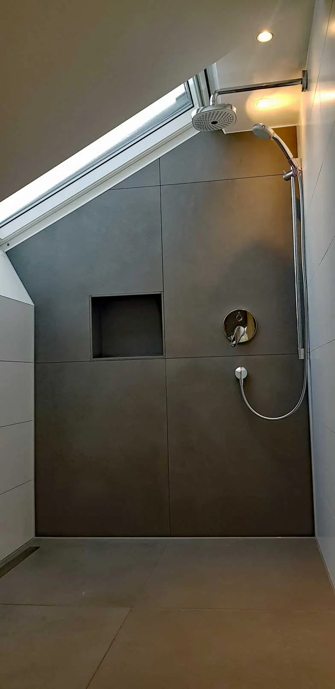
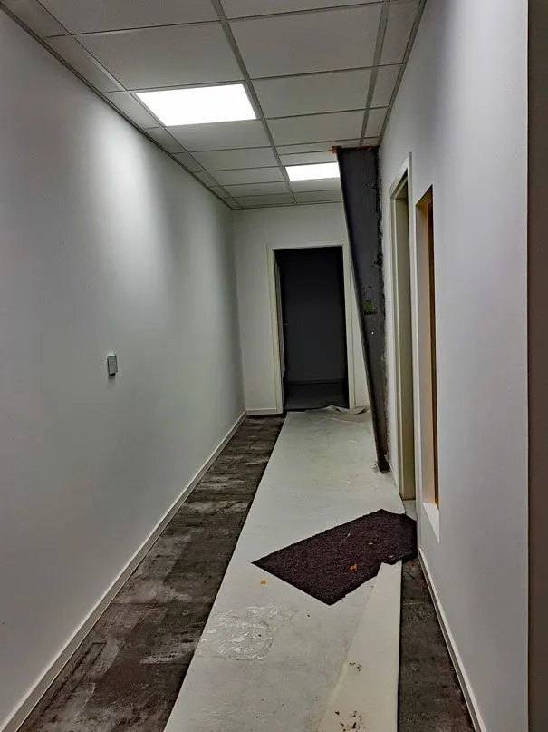

Projekte
Gerüst auf, Fassade neu, Gerüst ab.
Fotos von unseren Baustellen, aufgenommen von uns selbst. Wo wir ein Vorher haben, zeigen wir es auch.
Fassade
Wohnhaus, rundum neu verputzt
Ein Einfamilienhaus mit dunkler Holzverkleidung und altem Putz. Wir haben die Fassade auf allen Seiten erneuert: Gerüst, Putz, abgesetzter grauer Sockel, Anstrich. Die Kupferregenrinne blieb sichtbar.
 Vorher
Vorher Nachher · Nordseite
Nachher · Nordseite Nachher · Südseite
Nachher · Südseite Nachher · Westseite
Nachher · WestseiteMauersanierung
Mauer am Schulgelände
Der Beton an Mauer und Pfeilern war abgeplatzt und ausgewaschen. Wir haben ihn saniert, neu verputzt und in einem warmen Sandton gestrichen. Das Schild blieb, nur sauberer.
 Vorher
Vorher Vorher
Vorher Nachher
Nachher
Bad & Trockenbau
Komplettbad und Flur
Unter der Dachschräge ein bodengleiches Bad mit großen Fliesen und Nische. Dazu ein Flur mit abgehängter Decke, frisch gestrichenen Wänden und neuer Beleuchtung.




Sauberkeit zuerst
Sauber arbeiten heißt: erst abdecken, dann anfangen.
Wege, Böden und Pflanzen am Haus werden geschützt, bevor das erste Gerüstteil steht. Das kostet am Anfang Zeit und spart Ihnen hinterher das Putzen.
- Folie auf Wegen und Böden
- Pflanzen am Haus werden geschützt
- Das Ergebnis sieht man: Schulmauer, Fassade, Flur
Kontakt
Rufen Sie an oder schreiben Sie uns, wir melden uns.
07191 4939315Ein Termin im Büro in Allmersbach ist nach Absprache auch samstags möglich.
- Adresse
- Spahiu Stuckateur & Maler GmbH
Schönblick 7
71573 Allmersbach im Tal - info@spahiu-stuckateur.de
- Fax
- 07191 4934655
- Social
- InstagramFacebook